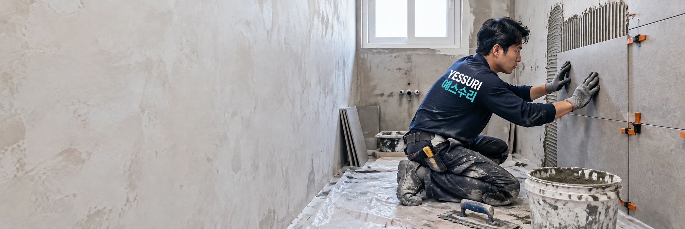
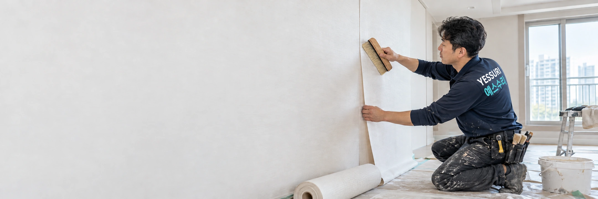
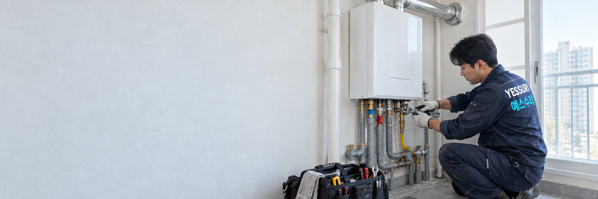
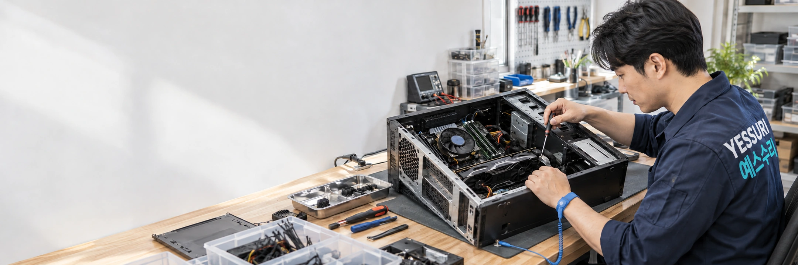
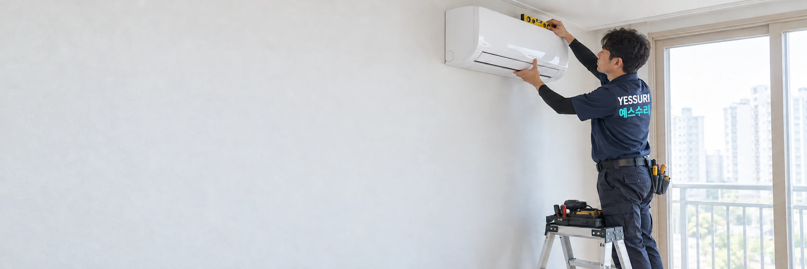

부산 우리 동네 집수리 연결
어떤 수리가 필요하세요?
작업과 제품 규격, 비용 확인사항을 알아보고 우리 동네 전문가와 상담하세요.
← 분야 목록으로
필요한 작업을 선택하면 제품·규격과 비용 확인사항이 표시됩니다.
비용은 항목별로 확인하세요.
출장·진단비
방문·점검·실측 비용의 발생 여부를 먼저 확인하세요.
작업비
작업 범위·수량·현장 조건에 따라 안내받으세요.
제품·자재비
규격·호환성·예산을 고려해 상담 후 선택하세요.
추가 작업비
철거·복구·운반·폐기물·장비 비용을 확인하세요.
방문 전 출장·진단비를, 제작·작업 전 제품 사양과 최종 견적·부가세 포함 여부를 확인하세요.
이렇게 진행합니다.
- 사진·증상 전달
- 현장·규격 확인
- 제품·견적 동의
- 작업 일정 협의
목록에 없는 분야도 함께 넓혀갑니다.
필요한 작업은 문의하고, 기술자는 전문 분야를 적어 등록 신청하세요. 실제 상담 가능 여부는 확인이 필요합니다.